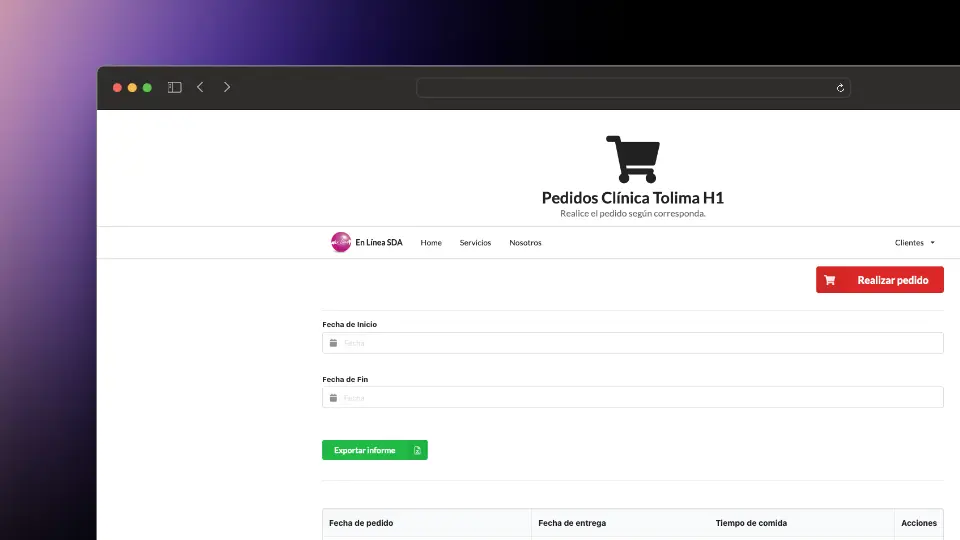

En Línea SDA
- Laravel
- MySQL
- HTML
- CSS
- JavaScript
Plataforma para la gestión de pedidos de una empresa de catering para empresas y hospitales. Este proyecto involucró la creación de una aplicación web robusta que permite a los clientes realizar pedidos, gestionar la facturación, realizar auditorías de cocinas satélite y mantener el control de los registros de calidad en tiempo real. Presenta una experiencia fluida e intuitiva tanto para los usuarios finales como para los administradores del sistema.